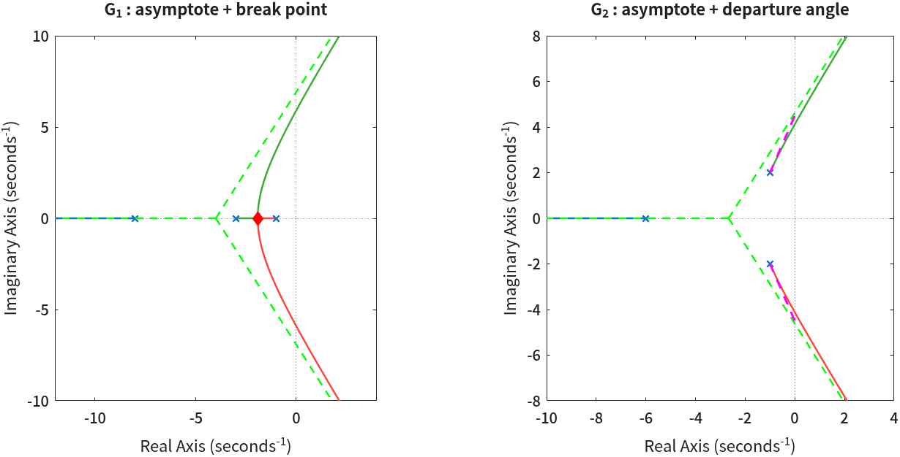
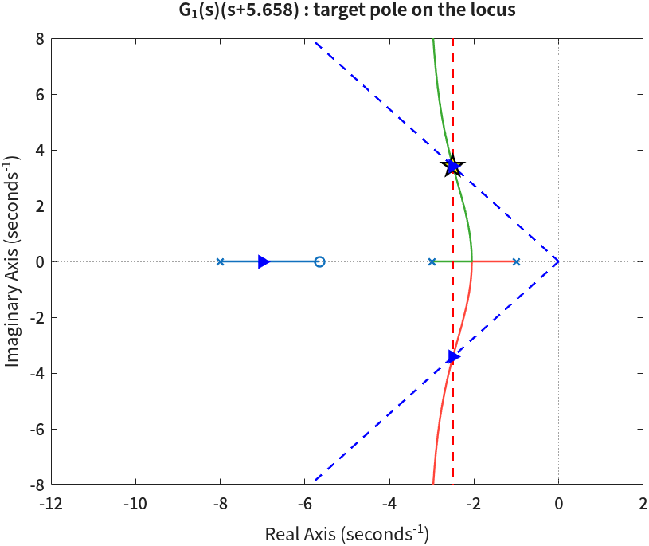
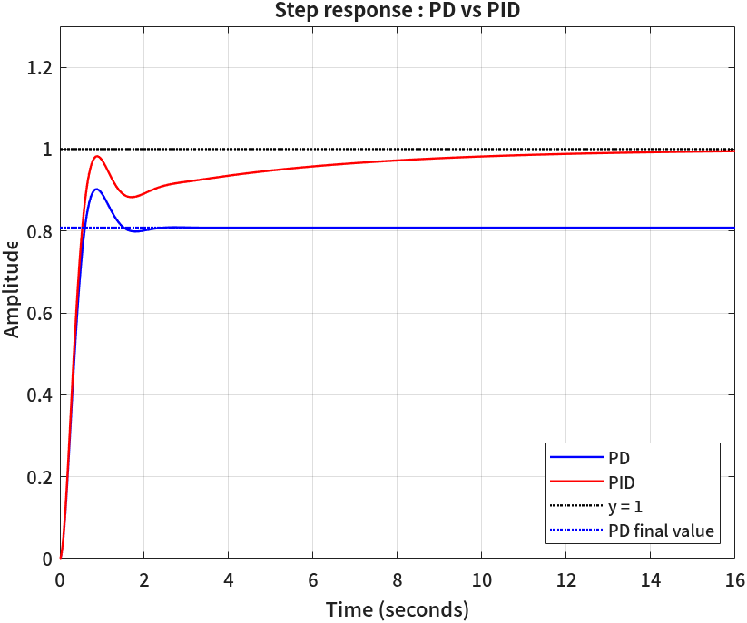

근궤적과 PID 제어기 설계
📅 제출 마감 — 2026년 11월 11일 (수) 23:59 · e-class 게시판
- 근궤적의 점근선 · 분기점 · 출발각을 손으로 구한 값이 MATLAB이 그린 근궤적과 겹치나요?
- 비례 제어(\(K\)만 바꾸기)로는 왜 원하는 만큼 빠르게 만들 수 없을까요? 근궤적의 어디를 보면 알 수 있나요?
- 목표 극점이 근궤적 위에 오도록 PD 영점을 놓는 계산은 근궤적의 어떤 조건을 쓰는 것일까요?
- PI 제어기를 붙이면 무엇이 좋아지고, 그 대신 무엇을 내주게 되나요?
1. 숙제는 다섯 문제입니다
근궤적을 그리는 법(5회)과 근궤적으로 제어기를 설계하는 법 (6회 · 7회)을 한 숙제에서 다룹니다. 두 부분은 여러분이 직접 정한 전달함수 \(G_1\) 하나로 이어집니다. 문제 1 · 2에서 그린 \(G_1\)의 근궤적이 문제 3 · 4 · 5에서 제어기를 붙일 대상이 됩니다.
문제 1 · 2 근궤적 문제 3 · 4 · 5 제어기 설계
───────────────────────── ────────────────────────────────────
G1 : 점근선 · 분기점 s_b ───────────────▶ P 제어의 한계 4/|s_b| → 사양 Ts
G2 : 점근선 · 출발각 → 목표 극점 s*
(손으로 구하고 MATLAB 그림에 겹친다) → PD 영점 (각도 조건) · K (크기 조건)
→ 계단응답 확인 → PI 추가
| 문제 | 하는 일 | 배점 |
|---|---|---|
| 1 | 전달함수 \(G_1\) · \(G_2\)를 정하고 점근선 · 분기점 · 출발각을 손으로 구하기 | 11 |
| 2 | MATLAB으로 두 근궤적을 그리고, 문제 1의 값으로 선과 점을 겹쳐 그려 대조하기 | 9 |
| 3 | 성능 사양 두 개(최대초과 · 정착시간)를 정하고 목표 극점을 손으로 구하기 | 6 |
| 4 | PD 영점(각도 조건)과 이득 \(K\)(크기 조건)를 손으로 구하고 MATLAB으로 확인하기 | 13 |
| 5 | 계단응답으로 사양을 확인하고, PI 제어기를 붙여 PD와 비교하기 | 11 |
다섯 문제가 50점이고, 보고서를 제출하면 기본 점수 10점을 받습니다. 합쳐서 총점 60점입니다.
2. 이 숙제에서 특히 신경 쓸 세 가지
(1) 전달함수와 사양을 스스로 정합니다
숫자는 각자 고릅니다. 고르는 규칙은 3절의 각 문제에 있습니다. 다른 학생과 겹치지 않도록 극점에 소수점 한 자리 수(1.4, 6.5 같은 수)를 넣습니다. 채점할 때 전원의 \(G_1\) · \(G_2\)와 사양을 표로 모아서 봅니다. 서로 상의하면서 방법을 배우는 것은 얼마든지 괜찮습니다. 숫자는 각자 자기 것을 넣으면 됩니다.
(2) 손으로 먼저 구하고, MATLAB으로 확인합니다
이 숙제의 계산은 전부 두 번 합니다. 한 번은 종이 위에서, 한 번은 MATLAB에서입니다. 손으로 구한 숫자를 코드에 적어 넣어서 선과 점을 그리면 손계산이 맞았는지가 그림에서 바로 보입니다 — 점근선이 근궤적과 나란히 가고, 분기점 표시가 가지가 갈라지는 자리에 앉아 있으면 맞은 것입니다. 강의자료의 함수로 그렸다면 함수가 명령 창에 찍어 준 숫자와 손계산을 나란히 놓고 보면 됩니다.
안 맞아도 감점하지 않습니다. 안 맞았다는 사실을 적고 어디가 틀린 것 같은지 한 줄 쓰면 그걸로 만점입니다. 비워 두면 그때 감점합니다. MATLAB이 답을 알려주기 전에 여러분이 먼저 답을 갖고 있는지를 보려는 것입니다.
(3) 모르는 건 찾아보세요. AI도 써도 됩니다
모르는 함수가 나오면 구글에 matlab 함수이름으로 검색하면 공식 문서에 인자와 예제가 나옵니다.
AI(ChatGPT, Claude 등)에게 물어보는 것도 괜찮습니다. 금지하지 않습니다.
가급적 강의자료에 나온 함수로 푸세요. 이 숙제는 1~7회 자료에 있는 함수만으로 전부 풀 수 있습니다.
강의 중에 만든 함수 파일 — root_locus · find_break_point · design_pd_controller ·
draw_overshoot_line 같은 것 — 도 그대로 불러 써도 됩니다.
이미 만들어 둔 것 중에서 쓸 만한 것을 골라 제자리에 가져다 쓰는 것도 실력입니다.
다만 함수가 구해 준 값은 손계산을 확인하는 데 쓰는 것이고, 손계산 칸은 따로 채웁니다.
강의자료에 없는 함수를 쓰고 싶으면 그 함수의 용도와 사용법을 부록 A에 한두 줄로 정리하면 됩니다.
정리하면 감점하지 않습니다. 부록 A에 적으려면 한 번은 찾아보게 됩니다. 그게 이 규칙의 목적입니다.
단, pidtune처럼 제어기를 자동으로 정해 주는 함수는 이 숙제에서 하려는 설계 과정을 통째로 건너뛰므로 쓰지 않습니다.
3. 문제 자세히
문제 1. 근궤적 작도 값을 손으로 구하기 (11점)
전달함수 두 개를 정합니다. 분자는 둘 다 1로 둡니다 — 이득 \(K\)는 근궤적이 따로 다룹니다.
$$ G_1(s) = \frac{1}{(s+a)(s+b)(s+c)} $$ $$ G_2(s) = \frac{1}{(s+d)\left((s+\sigma_2)^2+\omega_2^2\right)} $$| 고르는 규칙 | 왜 이 규칙인가 | |
|---|---|---|
| \(G_1\) | \(0 < a < b < c\), \(a \le 5\), \(b \ge a+1\), \(c \ge b+2\), \(c \le 20\) \(a, b, c\) 중 둘 이상은 소수점 한 자리 수 (예: \(a=1.4,\ b=3,\ c=9.5\)) |
극점이 너무 몰려 있으면 문제 4에서 PD 영점이 엉뚱한 자리로 갑니다 |
| \(G_2\) | \(\sigma_2 > 0\), \(\omega_2 > 0\), \(d \ge \sigma_2 + 1\) \(\sigma_2, \omega_2, d\) 중 하나 이상은 소수점 한 자리 수 (예: \(\sigma_2=1.5,\ \omega_2=2,\ d=7\)) |
실수 극점이 복소 극점보다 왼쪽에 있으면 분기점이 생기지 않아 출발각에만 집중할 수 있습니다 |
두 전달함수에 대해 아래 표의 빈칸을 손으로 구합니다. 빈칸은 여섯 개입니다.
| 점근선 중심 \(\sigma_c\) | 점근선 각도 \(\beta\) | 분기점 | 출발각 (위쪽 복소 극점) | |
|---|---|---|---|---|
| \(G_1\) | 해당없음 | |||
| \(G_2\) | 해당없음 |
- 계산 과정이 보여야 합니다. 종이에 쓴 것을 사진으로 붙이거나 워드 수식 입력기로 씁니다. 값만 적으면 점수가 거의 없습니다.
- 점근선은 5회 ④, 분기점은 ⑤, 출발각은 ⑦에 있습니다.
- 분기점은 후보가 둘 나옵니다. 둘 중 어느 것이 근궤적 위에 있는지를 고르는 이유도 한 줄 적어 주세요.
문제 2. MATLAB으로 근궤적을 그리고 손계산과 겹쳐 보기 (9점)
subplot(1,2,1)에 \(G_1\), subplot(1,2,2)에 \(G_2\)의 근궤적을 rlocus로 그리고,
그 위에 아래 것들을 겹쳐 그립니다.
| 자리 | 겹쳐 그릴 것 | 모양 |
|---|---|---|
subplot(1,2,1) | \(G_1\)의 점근선 세 개 · 분기점 | 점근선은 점선, 분기점은 다이아몬드 |
subplot(1,2,2) | \(G_2\)의 점근선 세 개 · 두 복소 극점의 출발각 | 점근선은 점선, 출발각은 극점에서 나가는 짧은 점선 |
겹쳐 그리는 방법은 둘 중 편한 쪽을 고르면 됩니다.
- 손계산 값으로 직접 긋기 — 손으로 구한 값을 코드 맨 위에 변수로 적고
plot으로 긋습니다. 예:sb = -1.918; % 문제 1에서 손으로 구한 분기점 - 강의자료 함수로 한 번에 그리기 — 5회 ⑧의
root_locus를 그대로 부르면 점근선 · 분기점 · 출발각을 계산해 그리고, 그 값을 명령 창에 숫자로 찍어 줍니다.
어느 쪽이든 보고서의 대조표에 손계산 값과 MATLAB 결과를 나란히 적습니다.
극점 · 분기점 · 점근선 중심이 다 보이지 않으면 axis()로 범위를 넓혀 주세요.

그림에서 볼 것 세 가지입니다.
- 분기점 다이아몬드가 두 가지가 실수축을 떠나는 자리에 앉아 있나요? 조금 떨어져 있으면 분기점 계산을 다시 보세요.
- 근궤적의 가지가 멀리 갈수록 초록 점선에 붙어 가나요? 점선과 가지가 다른 방향으로 벌어지면 점근선 중심이나 각도가 틀린 것입니다.
- 출발각 점선이 복소 극점에서 나가는 가지와 같은 방향인가요? 오른쪽 그림에서 자홍 점선이 가지에 거의 덮여 보이면 맞은 것입니다.
문제 3. 사양을 정하고 목표 극점을 손으로 구하기 (6점)
이제 \(G_1\)에 제어기를 붙입니다. 먼저 생각해 볼 것이 있습니다. \(K\)만 바꾸는 비례 제어로는 \(G_1\)을 얼마나 빠르게 만들 수 있을까?
문제 2의 왼쪽 그림을 다시 보면 답이 있습니다. 복소수가 된 두 극점은 분기점에서 출발해 점근선을 따라 오른쪽으로 갑니다. \(K\)를 아무리 바꿔도 이 두 극점의 실수부는 분기점 \(s_b\)보다 왼쪽으로 가지 못합니다. 정착시간은 \(T_s \approx 4/\sigma\)이므로, 비례 제어로 낼 수 있는 가장 짧은 정착시간은 대략 \(4/|s_b|\)입니다.
이 숙제의 사양은 그 한계를 넘도록 잡습니다. 그래서 PD 제어기가 필요해집니다.
| 사양 | 고르는 규칙 |
|---|---|
| 최대초과 %OS | 5 ~ 20 % 사이의 정수 하나 |
| 정착시간 \(T_s\) (2% 기준) | 문제 1에서 구한 분기점으로 \(4/|s_b|\)를 계산하고, 그 0.7 ~ 0.9배 사이에서 고릅니다 (소수 둘째 자리까지) |
두 사양을 동시에 만족하는 목표 극점 \(s^* = -\sigma + j\omega_d\)를 손으로 구합니다. %OS에서 \(\zeta\), \(T_s\)에서 \(\sigma\)를 구하고, 둘로 \(\omega_d\)를 구하면 됩니다. 식은 6회 ②에 있습니다.
문제 4. PD 영점과 이득 K를 손으로 구하고 MATLAB으로 확인하기 (13점)
7회 ③ ~ ⑤의 순서를 그대로 손으로 따라갑니다.
- 목표 극점에서 \(G_1\)의 각도 — 세 극점에서 \(s^*\)를 바라본 각을 각각 구하고 \(\angle G_1(s^*)\)를 구합니다. 이 값이 \(-180^\circ\)가 아니라는 것이 곧 \(s^*\)가 \(G_1\)의 근궤적 위에 없다는 뜻입니다. 비례 제어로는 갈 수 없다는 것을 각도 조건으로 확인하는 셈입니다.
- PD 영점 — PD 영점 \((s - z_{PD})\)이 채워야 할 각도를 구하고, 그 각도가 나오는 실수축 위의 점 \(z_{PD}\)를 구합니다 (7회 ④).
- 이득 \(K\) — 크기 조건으로 구합니다. \(s^*\)에서 극점 세 개와 PD 영점까지의 거리를 재면 됩니다 (7회 ⑤).
그다음 MATLAB으로 네 가지를 확인하고 표에 나란히 적습니다.
PD 영점은 7회 ④의 design_pd_controller로 한 번 더 확인해 봐도 좋습니다.
| 확인할 것 | MATLAB에서 | 맞았다면 |
|---|---|---|
| ① \(\angle G_1(s^*)\) | rad2deg(angle(evalfr(G1, st))) | 손계산과 같거나 360° 차이 |
| ② PD를 붙인 뒤의 각도 | Gpd = G1*(s - zpd); 뒤 같은 식 | \(\pm 180^\circ\) |
| ③ 이득 \(K\) | -1/evalfr(Gpd, st) | 실수부가 손계산 \(K\)와 같고 허수부는 거의 0 |
| ④ 폐루프 극점 | pole(feedback(K*Gpd, 1)) | 그중 한 쌍이 \(s^*\) |
angle은 각도를 \(-180^\circ \sim 180^\circ\) 사이로 접어서 돌려줍니다. \(-227^\circ\)와 \(133^\circ\)는 360° 차이라 같은 방향입니다.
표에는 두 값을 그대로 적고 「360° 차이」라고 써 두면 됩니다.
마지막으로 PD를 붙인 근궤적 그림을 하나 그립니다.
rlocus(Gpd) 위에 문제 3의 \(\zeta\)로 구한 최대초과 경계선 두 개, \(\sigma\)로 구한 정착시간 경계선 하나,
목표 극점, ④에서 구한 폐루프 극점을 겹칩니다. 경계선을 긋는 법은 6회 ③에 있고,
거기서 만든 draw_overshoot_line · draw_settling_time_line을 그대로 써도 됩니다.

문제 5. 계단응답으로 확인하고 PI 제어기 붙이기 (11점)
5-1. PD 결과를 사양과 비교합니다.
\(T_{PD} = \) feedback(K*Gpd, 1)에 stepinfo와 dcgain을 적용해
최대초과 · 정착시간 · 최종값을 사양과 나란히 적습니다.
최대초과가 사양보다 몇 % 높게 나와도 괜찮습니다. 목표 극점 말고도 극점이 하나 더 있고 PD 영점도 있어서 2차 시스템 공식이 조금 어긋납니다(6회 ⑦). 얼마나 어긋났는지 적고, 왜 그런지 한 줄 쓰면 됩니다.
5-2. PI 제어기를 붙입니다.
최종값이 1이 아니라는 것, 즉 정상상태 오차가 남는다는 것이 5-1에서 보였을 것입니다.
PI 제어기 \((s - z_{PI})/s\)를 더 붙여 이것을 없앱니다.
PI 영점은 \(z_{PI} = -\sigma/10\)으로 둡니다 — 원점 가까이에 두는 이유는 7회 ⑦에 있습니다.
\(K\)는 MATLAB으로 다시 구하면 됩니다(-1/evalfr, 손계산은 하지 않아도 됩니다).
PD와 PID의 단위계단응답을 한 그래프에 겹쳐 그립니다. 시간은 \(0 \sim 10\,T_s\)로 잡습니다.

5-3. 해석을 두세 줄 씁니다. PI를 붙여서 무엇이 좋아졌고, 그 대신 무엇이 달라졌나요? 위 예시 그림에서도 PID 곡선이 1까지 가는 데 시간이 꽤 걸리는 것이 보입니다. 왜 그런지는 7회 ⑧에 있습니다.
4. 보고서 작성과 제출
6절 보고서 양식에 있는 요소가 모두 들어가면 어떤 프로그램으로 만들어도 상관없습니다. 가급적 양식의 제목은 고치지 말고 내용만 채워주세요. 채점할 때 항목을 찾기 쉬워집니다.
- 워드 · 한글: 6절의 「워드 · 한글용 양식」을 펼쳐 「복사」를 누르고 빈 문서에 붙여 넣으면 제목 · 표가 서식째 들어갑니다. 다 채우고 PDF로 변환합니다 (워드: 파일 → 내보내기 → PDF 만들기). MS Office가 없으면 학교 메일 주소로 교육용 Office를 무료로 설치할 수 있습니다.
- 노션: 6절의 「노션용 양식」을 펼쳐 「복사」를 누르고 노션 페이지에 붙여 넣으면 제목 · 표 · 코드 칸이 그대로 살아납니다.
다 채우고 오른쪽 위
···→내보내기→ 형식PDF로 변환합니다.
| 항목 | 내용 |
|---|---|
| 기한 | 2026년 11월 11일 (수) 23:59 |
| 제출처 | e-class 게시판 |
| 파일명 | HW2_이름_학번.pdf (예: HW2_홍길동_20261234.pdf) |
| 총점 | 60점 (기본 10 + 문제 50) |
- 손계산은 종이에 쓴 뒤 사진을 찍어 붙이거나 워드 수식 입력기로 씁니다. 글씨가 선명하게 보이도록 찍어주세요.
- 코드와 명령 창 출력은 글자(텍스트)로 붙여 넣습니다. 화면 캡처 이미지는 보고서 양식 위반입니다(5절). 그래프만 그림으로 붙입니다.
- 코드는 명령 창에 한 줄씩 치지 말고 스크립트 파일(
.m)로 만들어서 실행합니다. 문제 2 ~ 5를 스크립트 하나에 이어 써도 됩니다. 보고서에는 문제마다 해당하는 부분을 나눠 붙입니다.
5. 감점 항목
문제별로 채점한 점수와 별도로, 아래 항목은 문제 점수(50점)에서 따로 차감합니다. 기본 점수 10점은 감점으로 깎이지 않습니다 — 제출했으면 최소 10점은 받습니다. 단, 지나치게 유사한 보고서는 기본 점수까지 0점이 될 수 있습니다.
| 감점 사유 | 감점 |
|---|---|
| 강의자료에 없는 함수를 쓰고 부록 A에 정리하지 않음 | 1개당 −2 (최대 −8) |
| 문제 1 · 3의 고르는 규칙 위반 (소수점 한 자리 수, 극점 간격, 사양 범위) | −2 |
| 보고서 양식 위반 — 파일명 규칙을 어김, PDF가 아님, 코드나 명령 창 출력을 이미지로 캡처해 붙임, 표지 · 0장 「내가 고른 숫자」 · 부록 A · B를 비움, 양식의 항목을 빼거나 순서 · 번호를 바꿔 문제별 답을 찾기 어려움 등 | 1건당 −2 (최대 −6) |
| 두 사람 이상의 보고서가 지나치게 유사함 | 감점 또는 0점 |
6. 보고서 양식
양식은 두 가지입니다. 내용은 같고 붙여 넣을 곳만 다릅니다. 쓰는 프로그램에 맞는 것 하나만 펼쳐서 「복사」 버튼을 누르고 붙여 넣은 뒤 빈칸을 채우면 됩니다.
워드 · 한글용 양식 — 제목과 표가 서식째 붙습니다
「복사」를 누르고 워드나 한글의 빈 문서에 붙여 넣으면 제목은 제목 스타일로, 표는 표로 들어갑니다. 회색 글씨로 된 안내 문구는 지우고 그 자리를 채우세요.
보고서 — Homework #2 근궤적과 PID 제어기 설계
| 학과 | |
|---|---|
| 학번 | |
| 이름 | |
| 제출일 |
0. 내가 고른 숫자
| 값 | |
|---|---|
| G1(s) | 1 / ((s + ___)(s + ___)(s + ___)) |
| G2(s) | 1 / ((s + ___)((s + ___)² + ___²)) |
| 최대초과 %OS | ___ % |
| 정착시간 Ts | ___ s |
1. 근궤적 작도 값 손으로 구하기 (11점)
1.1 결과
| 점근선 중심 σc | 점근선 각도 β | 분기점 | 출발각 (위쪽 복소 극점) | |
|---|---|---|---|---|
| G1 | 해당없음 | |||
| G2 | 해당없음 |
1.2 계산 과정
| (손글씨 사진 또는 수식 입력기 — 분기점 후보 둘 중 하나를 고른 이유 포함) |
2. MATLAB으로 근궤적 그리고 겹쳐 보기 (9점)
코드
| (코드를 텍스트로 붙여 넣기) |
그래프
| (figure 전체를 캡처해 붙여 넣기) |
대조 확인
| 손계산 | MATLAB (함수가 찍은 값, 또는 그림에서 겹치는지) | 맞나요? | |
|---|---|---|---|
| G1 점근선 | |||
| G1 분기점 | |||
| G2 점근선 | |||
| G2 출발각 |
맞지 않는 것이 있으면 어디가 틀린 것 같은지 한 줄 쓰세요. 고쳤다면 무엇을 고쳤는지 쓰세요.
3. 사양과 목표 극점 (6점)
P 제어의 한계 4/|s_b| = ___ s → 내가 고른 Ts = ___ s (0.7 ~ 0.9배)
계산 과정 (ζ, σ, ω_d)
| (손글씨 사진 또는 수식 입력기) |
목표 극점 s* = ___ + j ___
4. PD 영점과 이득 K (13점)
4.1 목표 극점에서 G1의 각도 (손계산)
4.2 PD 영점 z_PD (손계산)
4.3 이득 K — 크기 조건 (손계산)
4.4 MATLAB으로 확인
코드
| (코드를 텍스트로 붙여 넣기) |
명령 창 출력
| (출력을 텍스트로 붙여 넣기) |
| 확인할 것 | 손계산 | MATLAB | 맞나요? |
|---|---|---|---|
| ∠G1(s*) | |||
| ∠G1(s*)(s* − z_PD) | −180° | ||
| K | |||
| 폐루프 극점 | s* |
그래프 (PD를 붙인 근궤적 + 경계선 + 목표 극점 + 폐루프 극점)
| (figure 전체를 캡처해 붙여 넣기) |
5. 계단응답으로 확인하고 PI 붙이기 (11점)
5.1 PD 결과와 사양
코드와 출력
| (코드와 출력을 텍스트로 붙여 넣기) |
| 사양 | PD (MATLAB) | |
|---|---|---|
| 최대초과 (%) | ||
| 정착시간 (s) | ||
| 최종값 | 1 |
사양과 어긋난 것이 있으면 얼마나, 왜 그런 것 같은지 한 줄:
5.2 PI 제어기 추가
z_PI = −σ/10 = ___ , K = ___ , PID 최종값 = ___
코드
| (코드를 텍스트로 붙여 넣기) |
그래프 (PD와 PID 계단응답을 한 그래프에)
| (figure 전체를 캡처해 붙여 넣기) |
5.3 해석 — PI를 붙여서 무엇이 좋아지고 무엇이 달라졌나 (두세 줄)
부록 A. 강의자료에 없는 함수 정리
안 썼으면 「없음」이라고 씁니다.
| 함수 | 어디에 썼나 | 무엇을 하는 함수이고 어떻게 쓰는가 (한두 줄) |
|---|---|---|
부록 B. 작업 기록
1. AI를 사용했다면, AI가 처음 쓴 것 중에서 나중에 고친 것이 있나요? 왜 고쳤나요?
2. 이 숙제에서 가장 오래 막혔던 지점은 어디였고, 어떻게 풀었나요?
3. AI와 대화한 내용 요약 (AI를 쓰지 않았으면 「사용하지 않음」)
| (아래 프롬프트의 결과를 붙여 넣기) |
노션용 양식 — 마크다운
「복사」를 누르고 노션 페이지에 붙여 넣으면 제목 · 표 · 코드 칸이 그대로 살아납니다.
# 보고서 — Homework #2 근궤적과 PID 제어기 설계
| 항목 | 내용 |
|---|---|
| 학과 | |
| 학번 | |
| 이름 | |
| 제출일 | |
## 0. 내가 고른 숫자
| | 값 |
|---|---|
| G1(s) | 1 / ((s + ___)(s + ___)(s + ___)) |
| G2(s) | 1 / ((s + ___)((s + ___)^2 + ___^2)) |
| 최대초과 %OS | ___ % |
| 정착시간 Ts | ___ s |
---
## 1. 근궤적 작도 값 손으로 구하기 (11점)
### 1.1 결과
| | 점근선 중심 σc | 점근선 각도 β | 분기점 | 출발각 (위쪽 복소 극점) |
|---|---|---|---|---|
| G1 | | | | 해당없음 |
| G2 | | | 해당없음 | |
### 1.2 계산 과정
(손글씨 사진 또는 수식 입력기 — 분기점 후보 둘 중 하나를 고른 이유 포함)
---
## 2. MATLAB으로 근궤적 그리고 겹쳐 보기 (9점)
**코드** (텍스트로 붙여 넣기)
```matlab
```
**그래프** (figure 전체를 캡처해 붙여 넣기)
**대조 확인**
| | 손계산 | MATLAB (함수가 찍은 값, 또는 그림에서 겹치는지) | 맞나요? |
|---|---|---|---|
| G1 점근선 | | | |
| G1 분기점 | | | |
| G2 점근선 | | | |
| G2 출발각 | | | |
맞지 않는 것이 있으면 어디가 틀린 것 같은지 한 줄 쓰세요. 고쳤다면 무엇을 고쳤는지 쓰세요.
:
---
## 3. 사양과 목표 극점 (6점)
**P 제어의 한계** 4/|s_b| = ___ s → 내가 고른 Ts = ___ s (0.7 ~ 0.9배)
**계산 과정** (ζ, σ, ω_d — 사진 또는 수식)
:
**목표 극점** s* = ___ + j ___
---
## 4. PD 영점과 이득 K (13점)
### 4.1 목표 극점에서 G1의 각도 (손계산)
:
### 4.2 PD 영점 z_PD (손계산)
:
### 4.3 이득 K — 크기 조건 (손계산)
:
### 4.4 MATLAB으로 확인
**코드** (텍스트로 붙여 넣기)
```matlab
```
**명령 창 출력** (텍스트로 붙여 넣기)
```
```
| 확인할 것 | 손계산 | MATLAB | 맞나요? |
|---|---|---|---|
| ∠G1(s*) | | | |
| ∠G1(s*)(s* − z_PD) | −180° | | |
| K | | | |
| 폐루프 극점 | s* | | |
**그래프** (PD를 붙인 근궤적 + 경계선 + 목표 극점 + 폐루프 극점)
---
## 5. 계단응답으로 확인하고 PI 붙이기 (11점)
### 5.1 PD 결과와 사양
**코드와 출력** (텍스트로 붙여 넣기)
```matlab
```
| | 사양 | PD (MATLAB) |
|---|---|---|
| 최대초과 (%) | | |
| 정착시간 (s) | | |
| 최종값 | 1 | |
사양과 어긋난 것이 있으면 얼마나, 왜 그런 것 같은지 한 줄:
:
### 5.2 PI 제어기 추가
z_PI = −σ/10 = ___ , K = ___ , PID 최종값 = ___
**코드** (텍스트로 붙여 넣기)
```matlab
```
**그래프** (PD와 PID 계단응답을 한 그래프에)
### 5.3 해석 — PI를 붙여서 무엇이 좋아지고 무엇이 달라졌나 (두세 줄)
:
---
## 부록 A. 강의자료에 없는 함수 정리
안 썼으면 "없음"이라고 씁니다.
| 함수 | 어디에 썼나 | 무엇을 하는 함수이고 어떻게 쓰는가 (한두 줄) |
|---|---|---|
| | | |
## 부록 B. 작업 기록
**1. AI를 사용했다면, AI가 처음 쓴 것 중에서 나중에 고친 것이 있나요? 왜 고쳤나요?**
:
**2. 이 숙제에서 가장 오래 막혔던 지점은 어디였고, 어떻게 풀었나요?**
:
**3. AI와 대화한 내용 요약** (AI를 쓰지 않았으면 "사용하지 않음")
(여기에 붙여 넣기)
부록 B의 3번은 AI 세션을 끝내기 전에 아래 프롬프트를 그대로 넣고 나온 결과를 붙이면 됩니다. 내용으로 점수를 매기지 않습니다.
이 세션을 끝내기 전에 지금까지의 대화를 아래 규칙대로 정리해 줘.
- 내가 보낸 메시지는 요약하지 말고 순서대로 원문 그대로 적어. 한 글자도 바꾸지 마.
- 네 대답은 중간 과정(탐색·시도·설명·되묻기)을 빼고, 그 요청으로 실제로 만들거나 고친 것만 두세 줄로 요약해.
만들거나 고친 파일 이름과 함수 이름을 적고, 요청과 다르게 한 것이 있으면 그것도 적어.
- 대화 순서대로 번호를 붙여 아래 형식으로 써. 이 형식 밖의 말은 붙이지 마.
### 1
**나:** (원문 그대로)
**AI:** (구현하거나 수정한 것 요약)
### 2
**나:** …
**AI:** …
모두 수고하세요.